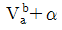
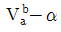
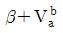
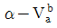
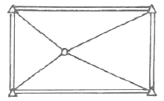
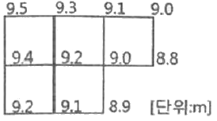
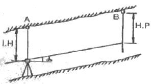

지적기사 (2019-08-04 기출문제)
1과목: 지적측량
1. 지적도근점측량에서 변장의 거리가 200m인 측점에서 2cm 편위한 측각오차는?
- 21“
- 31“
- 36“
- 42“
(정답률: 67%)

2. 방향관측법으로 수평각을 3대회 관측할 때, 각 방향각은 몇 회를 측정하게 되는가?
- 2회
- 3회
- 4회
- 6회
(정답률: 57%)
3. 우리나라 토지조사사업 당시 기선측량을 실시한 지역 수는?
- 7개소
- 10개소
- 13개소
- 19개소
(정답률: 80%)
4. 배각법에 의한 지적도근점의 각도관측 시 측정오차의 배분 방법으로 옳은 것은?
- 반수에 비례하여 각 측선의 관측각에 배분한다.
- 반수에 반비례하여 각 측선의 관측각에 배분한다.
- 변의 수에 비례하여 각 측선의 관측각에 배분한다.
- 변의 수에 반비례하여 각 측선의 관측각에 배분한다.
(정답률: 43%)
5. A점과 B점의 종선좌표값은 같고 B점의 횡선좌표가 A점보다 큰 값을 가지고 있다. 교회점 계산 시 내각을 이용하여 방위각을 계산하는 경우, P의 위치가 A점에서 3상한에 조재할 때 Va를 구하는 식은?




(정답률: 52%)
6. 경위의측량방법에 따른 세부측량을 하여 측량대상 토지의 경계점 간 실측거리가 50m이었을 때 경계점의 좌표에 따라 계산한 거리와의 교차는 얼마 이내이어야 하는가?
- 5cm 이내
- 8cm 이내
- 10cm 이내
- 12cm 이내
(정답률: 61%)
7. 참값을 구하기 어려우므로 여러 번 관측하여 얻은 관측값으로부터 최확값을 얻기 위한 조정방법이 아닌 것은?
- 간이법
- 미정계수법
- 최소조정법
- 라플라스 변수법
(정답률: 62%)
8. 경위의측량방법과 교회법에 따른 지적삼각보조점의 관측 및 계산 기준으로 옳지 않은 것은?
- 변의 길이를 계산하는 단위는 cm이다.
- 수평각 관측은 2대회의 방향관측법에 따른다.
- 관측은 20초독 이상의 경위의를 사용하여야 한다.
- 수평각의 측각공차는 기지각과의 차가 ±40초 이내여야 한다.
(정답률: 66%)
9. 축척 500분의 1 도곽선에 신축량이 1.8mm줄었을 경우 면적의 보정계수는?
- 0.9895
- 1.0106
- 1.0213
- 1.1140
(정답률: 62%)
10. 1910년대 토지조사사업 당시 채택한 준거타원체의 편평률은?
- 1/293.47
- 1/297.00
- 1/298.26
- 1/299.15
(정답률: 60%)
11. 지상 경계의 구획을 형성하는 구조물 등의 소유자가 다른 경우 지상 경계를 결정하는 기준으로 옳은 것은?
- 그 소유권에 따라 지상 경계를 결정한다.
- 도상 경계에 따라 지상 경계를 결정한다.
- 면적이 넓은 쪽을 따라 지상 경계를 결정한다.
- 그 구조물 등의 중앙을 따라 지상 경계를 결정한다.
(정답률: 68%)
12. 평판측량방법에 따른 세부측량 시 임야도를 갖춰 두는 지역의 거리측정단위로 옳은 것은?
- 5cm
- 20cm
- 40cm
- 50cm
(정답률: 72%)
13. 경위의측량방법으로 세부측량을 할 때 연직각에 대한 관측방법으로 옳은 것은?
- 정반으로 1회 관측하여 그 교차가 1분 이내이면 평균치로 한다.
- 정반으로 2회 관측하여 그 교차가 1분 이내이면 평균치로 한다.
- 정반으로 1회 관측하여 그 교차가 5분 이내이면 평균치로 한다.
- 정반으로 2회 관측하여 그 교차가 5분 이내이면 평균치로 한다.
(정답률: 60%)
14. 지적삼각점측량 방법의 기준으로 옳지 않은 것은?
- 미리 지적삼각점표지를 설치하여야 한다.
- 지적삼각점표지의 점감거리는 평균 2km이상 5km 이하로 한다.
- 삼각형의 각 내각은 30°이상 120°이하로 한다. 단, 망평균계산법과 삼변측량에 따르는 경우에는 그러하지 아니한다.
- 지적삼각점의 명칭은 측량지역이 소재하고 잇는 시ㆍ군의 명칭 중 한 글자를 선택하고, 시ㆍ군 단위로 일련번호를 붙여서 정한다.
(정답률: 69%)
15. 관측 시의 장력 P=20kg 일 때, 관측 길이 L=49.0⑤5m인 기선의 인장에 대한 보정량은? (단, 단면적 A=0.03342cm2, 표준장력 PO=5kg, 탄성계수 E=200kg/m2)
- +0.011m
- -0.011m
- +0.022m
- -0.022m
(정답률: 24%)
16. 축척 600분의 1 지역에서 지적도근점측량을 실시하여 측정한 수평거리의 총합계가 1600m이었을 때 연결오차는? (단, 1등도선인 경우다.)
- 2.4m 이하
- 0.24m 이하
- 2.7m 이하
- 0.27m 이하
(정답률: 61%)
17. 30m의 천줄자를 사용하여 A, B 두 점간의 거리를 측정하였더니 1.6km였다. 이 천줄자를 표준길이와 비교 검정한 결과 30m에 대하여 20mm가 짧았다면 올바른 거리는?
- 1596m
- 1597m
- 1599m
- 1601m
(정답률: 71%)
18. 아래 그림의 망형으로 소구점을 구할 때 필요한 최소 조건식(규약)은?

- 4개
- 7개
- 9개
- 11개
(정답률: 59%)
19. 평판측량방법에 따른 세부측량에서 지상경계선과 도상경계선의 부합 여부를 확인하는 방법으로 옳지 않은 것은?
- 현형법
- 거리비교교회법
- 도상원호교회법
- 지상원호교회법
(정답률: 67%)
20. 평판측량을 위해 평판을 세울 때의 오차 중 결과에 큰 영향을 주는 것은?
- 평판이 수평으로 되지 않을 때
- 평판의 구심이 올바르지 않을 때
- 평판의 표정이 올바르지 않을 때
- 앨리데이드의 조정이 불충분할 때
(정답률: 61%)
2과목: 응용측량
21. 클로소이드 곡선의 매개변수를 2배 증가시키고자 한다. 이때 곡선의 반지름이 일정하다면 완화곡선의 길이는 몇 배가 되는가?
- 2
- 4
- 8
- 14
(정답률: 68%)
22. 그림과 같은 지역에 정지작업을 하엿을 때, 절토량과 성토량이 같아지는 지반고는? (단, 각 구역의 크기(4m×4m)는 동일하다.)

- 8.95m
- 9.⑤m
- 9.15m
- 9.35m
(정답률: 51%)
23. 상향기울기 7.5/1000와 하향기울기 45/1000인 두 직선에 반지름 2500m인 원곡선을 종단곡선으로 설치할 때, 곡선시점에서 25m 떨어져 있는 지점의 종거 y값은 약 얼마인가?
- 0.1m
- 0.3m
- 0.4m
- 0.5m
(정답률: 22%)
24. 항공사진 측량에서 산지는 실제보다 돌출하여 높고 기복이 심하며, 계곡은 실제보다 깊고, 사면은 실제의 경사보다 급하게 느껴지는 것은 무엇에 의한 영향인가?
- 형상
- 음영
- 색조
- 과고감
(정답률: 75%)
25. 터널을 만들기 위하여 A, B 두 점의 좌표를 측정한 결과 A점은 N(X)A=1000.00m, E(Y)A=250.00m, B점은 N(X)A=1500.00m, E(Y)A=50.00m 이었다면 AB의 방위각은?
- 21°48‘⑤“
- 158°11‘55“
- 201°48‘⑤“
- 338°11‘55“
(정답률: 58%)
26. 지형도의 이용과 가장 거리가 먼 것은?
- 연직단면의 작성
- 저수용량, 토공량의 산정
- 면적의 도상 측정
- 지적도 작성
(정답률: 64%)
27. GPS에서 사용되는 L1과 L2 신호의 주파수로 옳은 것은?
- 150MHz와 400MHz
- 420MHz와 585.53MHz
- 1575.42MHz와 1227.60MHz
- 1832.12MHz와 3236.94MHz
(정답률: 74%)
28. 수차사진측량 작업에서 영상정합 이전의 전처리작업에 해당하지 않는 것은?
- 영상개선
- 영상복원
- 방사보정
- 경계선탐색
(정답률: 35%)
29. 다음 중 원곡선의 종류가 아닌 것은?
- 반향 곡선
- 단곡선
- 렘니스케이트 곡선
- 복심 곡선
(정답률: 71%)
30. 촬영기준면으로부터 비행고도 4350m에서 촬영한 연직사진의 크기가 23cm×23cm이고 이 사진의 촬영면적이 48km2라면 카메라의 초점거리는?
- 14.4cm
- 17.0cm
- 21.0cm
- 47.9cm
(정답률: 50%)
31. 수준측량에서 각 점들이 중력방향에 직각으로 이루어진 곡면을 뜻하는 용어는?
- 지평면(horizontal plane)
- 수준면(level surface)
- 연직면(plumb plane)
- 특별기준면(special datum plane)
(정답률: 45%)
32. 축적 1:50000의 지형도에서 A점과 B점 사이의 거리를 도상에서 관측한 결과 16mm였다. A점의 표고가 230m, B점의 표고가 320m일 때, 이 사면의 경사는?(오류 신고가 접수된 문제입니다. 반드시 정답과 해설을 확인하시기 바랍니다.)
- 1/9
- 1/10
- 1/11
- 1/12
(정답률: 45%)
33. 캔트의 계산에 있어서 곡선반지름만을 반으로 줄이면 캔드의 크기는 어떻게 되는가?
- 반으로 준다.
- 변화가 없다.
- 2배가 된다.
- 4배가 된다.
(정답률: 60%)
34. 경사 터널 내 고저차를 구하기 위해 그림과 같이 고저각 a, 경사거리 L을 측정하여 다음과 같은 결과를 얻었다. A, B간의 고저차는? (단, LH=1.15m, H.P=1.56m, L=31.00m, a=+30°)

- 15.09m
- 15.91m
- 18.31m
- 18.21m
(정답률: 63%)
35. GNSS의 구성체계에 포함되지 않는 부문은?
- 우주부문
- 사용자부문
- 제어부문
- 탐사부문
(정답률: 65%)
36. 지상 1km2의 면적이 어떤 지형도상에서 400cm2일 때 지형도의 축척은?
- 1:1000
- 1:5000
- 1:25000
- 1:50000
(정답률: 53%)
37. 평탄한 지형에서 초점거리 150mm인 카메라로 촬영한 축척 1:15000 사진 상에서 굴뚝의 길이가 2.4mm, 주점에서 굴뚝 윗부분까지의 거리가 20cm로 측정되었다. 이 굴뚝의 실제 높이는?
- 20m
- 27m
- 30m
- 36m
(정답률: 55%)
38. 수준측량에서 전시와 후시의 거리를 같게 함으로써 소거할 수 있는 주요 오차는?
- 망원경의 시준선이 기포관축에 평행하지 않아 생기는 오차
- 시준하는 순간 기포가 중앙에 있지 않아 생기는 오차
- 전시와 후시의 야장기입을 잘못하여 생기는 오차
- 표척이 표준길이와 달라서 생기는 오차
(정답률: 63%)
39. 네트워크 RTK GNSS 측량의 특징이 아닌 것은?
- 실내ㆍ외 어디에도 측량이 가능하다.
- 1대의 GNSS 수신기만으로도 측량이 가능하다.
- GNSS 상시관측소를 기준국으로 사용한다.
- 관측자가 1명이어도 관측이 가능하다.
(정답률: 64%)
40. 수준측량으로 지반고(G.H)를 구하는 식은? (단, B.S:후시, F.S:전시, L.H:기계고)
- G.H=L.H+F.S
- G.H=L.H+B.S
- G.H=L.H-F.S
- G.H=L.H-B.S
(정답률: 45%)
3과목: 토지정보체계론
41. 다음 중 표고를 나타내는 자료가 아닌 것은?
- DEM
- DLG
- DTM
- TIN
(정답률: 54%)
42. 벡터데이터와 래스터데이터의 구조에 관한 설명으로 옳지 않은 것은?
- 래스터데이터는 중첩분석이나 모델링이 유리하다.
- 벡터데이터는 자료구조가 단순하여 중첩분석이 쉽다.
- 벡터데이터는 좌표계를 이용하여 공간정보를 기록한다.
- 벡터데이터는 점, 선, 면으로 래스터데이터는 격자로 도형을 표현한다.
(정답률: 77%)
43. 필지중심토지정보시스템(PBLIS)에 대한 설명으로 옳지 않은 것은?
- LMIS와 통합되어 KLIS로 운영되어 왔다.
- 각종 지적행정업무의 수행과 정책정조를 제공할 목적으로 개발되었다.
- 지적전산화사업의 속성 데이터베이스를 연계하여 구축되었다.
- 개발 초기에 토지관리 업무시스템, 공간자료관리시스템, 토지행정지원시스템으로 구성되었다.
(정답률: 44%)
44. 토지정보시스템의 구성요소에 해당되지 않는 것은?
- 소프트웨어
- 정보이용자
- 데이터베이스
- 인력 및 조직
(정답률: 76%)
45. 다음 중 임야도의 도형자료를 스캐너로 편집한 자료형태는?
- 속성정보
- 메타데이터
- 벡터데이터
- 래스터데이터
(정답률: 68%)
46. 지적재조사업 측량 대행자의 전산시스템 등록업무와 관련이 없는 것은?
- 경계점 표지등록부 전산등록
- 해당 사업지구 사용자 전산등록 및 승인요청
- 지적재조사사업지구 등 실시계획에 관한 사항 전산등록
- 일필지측량 완료 후 지적확정조서에 관한 사항 전산등록
(정답률: 35%)
47. 레이어의 중첩에 대한 설명으로 옳지 않은 것은?
- 레이어별로 필요한 정보를 추출해 낼 수 있다.
- 일정한 정보만을 처리하기 때문에 정보가 단순하다.
- 새로운 가설이나 이론 및 시뮬레이션을 통해 정보를 추출하는 모델링 작업을 수행할 수 있다.
- 형상들의 공간관계를 파악할 수 있으며 특정지점의 주변 환경에 대한 정보를 얻고자 하는 경우에도 사용할 수 있다.
(정답률: 61%)
48. 표면모델링에 대한 설명으로 옳지 않은 것은?
- 선형으로 나타나는 불완전한 표면의 대표적인 것은 등고선 또는 등치선이다.
- 불완전한 표면은 격자의 x, y좌표가 알려져 있고 z좌표값만 입력하면 된다.
- 수집되는 데이터의 특성과 표현방법에 따라 완전한 표면과 불완전한 표면으로 구분된다.
- 완전한 표면은 관심대상지역이 분할되어 있고 각각의 분할된 구역에 다양한 z값을 가지고 있다.
(정답률: 48%)
49. 스캐너에 의한 반자동 입력방식의 작업과정을 순서대로 올바르게 나열한 것은?
- 준비→래스터데이터 취득→벡터화 및 도형인식→편집→출력 및 저장
- 준비→벡터화 및 도형인식→편집→래스터데이터 취득→출력 및 저장
- 준비→편집→벡터와 및 도형인식→래스터데이터 취득→출력 및 저장
- 준비→편집→래스터데이터 취득→벡터화 및 도형인식→출력 및 저장
(정답률: 67%)
50. 스캐너 및 좌표독취기 장비를 이용한 좌표취득 특성으로 옳지 않은 것은?
- 작업환경이 양호하여 작업진행이 수월하다.
- 정밀도가 높아 도곽을 기준점으로 변위작업이 가능하다.
- 스캐너에 의한 작업은 스캐닝 및 이미지파일 수신시간이 소요된다.
- 스캐너는 축이 고정되어 있어 이동식 장비보다 오차 발생요인은 적으나 작업영역이 한정되어 있다.
(정답률: 49%)
51. 토지정보시스템(LIS)의 구축 목적으로 옳지 않은 것은?
- 지적재조사의 기반 확보
- 다목적 지적정보체계 구축
- 도시기반시설의 유지 및 관리
- 지적 관련 민원의 신속ㆍ정확한 처리
(정답률: 60%)
52. DBMS방식의 자료 관리의 장점이 아닌 것은?
- 중앙제어가 가능하다.
- 자료의 중복을 최대한 감소시킬 수 있다.
- 시스템 구성이 파일방식에 비해 단순하다.
- 데이터베이스 내의 자료는 다른 사용자와의 호환이 가능하다.
(정답률: 64%)
53. 격자구조를 압축 및 저장하는 기법 중 각각의 열(列) 진행방향에 대하여 동일한 속성값을 갖는 격자(cell)들을 하나로 묶어 길이와 위치를 저장하는 방식은?
- Quadtree 기법
- Block code 기법
- Chain code 기법
- Run-length code 기법
(정답률: 63%)
54. GIS에서 위성영상 자료의 활용 등에 관한 설명으로 옳지 않은 것은?
- 벡터데이터 구조로 처리ㆍ지정되므로 데이터호환이 매우 쉽다.
- 인공위성 상용영상의 해상도가 높아지면서 GIS에서 활용이 크다.
- 원격탐사 및 영상처리는 공간데이터를 다루는 특성화된 기술이다.
- 데이터가 컴퓨터로 바로 처리할 수 있는 디지털 형태라는 점에서 GIS와 통합되고 있다.
(정답률: 68%)
55. 지적행정에 웹(Web)기반의 LIS를 도입함으로써 발생하는 효과가 아닌 것은?
- 정보와 지원을 공유할 수 있다.
- 업무별 분산처리를 실현할 수 있다.
- 서버의 구축비용을 절감할 수 있다.
- 시간과 거리에 제한을 받지 않으며 민원을 처리할 수 있다.
(정답률: 60%)
56. 국가의 공간정보의 제공과 관련한 내용으로 옳지 않은 것은?
- 공간정보이용자에게 제공하기 위하여 국가공간정보센터를 설치ㆍ운영하고 있다.
- 수집한 공간정보는 제공의 효율화를 위해 분석 또는 가공하지 않고 원 자료 형태로 제공하여야 한다.
- 관리기관이 공공기관일 경우는 자료를 제출하기 전에 주무기관의 장과 미리 합의하여야 한다.
- 국토교통부장관은 국가공간정보센터의 운영에 필요한 공간정보를 생산 또는 관리하는 관리기관의 장에게 자료의 제출을 요구할 수 있다.
(정답률: 76%)
57. 전자평판측량 및 위성측량방법으로 관측 후 지적측량정보를 처리할 수 있는 시스템에 따라 작성된 측량결과도 파일과 토지이동정리를 위한 지번, 지목 및 경계점의 좌표가 포함 된 파일은?
- 측량준비파일
- 측량성과파일
- 측령현형파일
- 측량부데이터베이스
(정답률: 70%)
58. 도시정보시스템에 대한 설명으로 옳지 않은 것은?
- 토지와 건물의 속성만을 입력할 수 있는 시스템이다.
- UIS라고 하며 Urban Information System의 약어이다.
- 도시전반에 관한 사항을 관리ㆍ활용하는 종합적이고 체계적인 정보시스템이다.
- 지적도 및 각종 지형도, 도시계획도, 토지이용계획도, 도로교통시설물 등의 지리정보를 데이터베이스화한다.
(정답률: 75%)
59. 다음 중 지적전산업무에 속하지 않는 것은?
- 용도지역 고시
- 지적측량성과 작성
- 부동산종합공부의 운영
- 지적공부의 데이터베이스화
(정답률: 49%)
60. 벡터형식의 토지정보 자료구조 중 위상 관계없이 점, 선, 다각형을 단순한 좌표로 저장하는 방식은?
- 블록코드 모형
- 스파게티 모형
- 체인코드 모형
- 커버리지 모형
(정답률: 71%)
4과목: 지적학
61. 토지조사사업 당시 토지대장은 1동ㆍ리마다 조제하되 약 몇 매를 1책으로 하였는가?
- 200매
- 300매
- 400매
- 500매
(정답률: 61%)
62. 지적법이 제정되기까지의 순서를 올바르게 나열한 것은?
- 토지조사법→토지조사령→지세령→조선지세령→조선임야조사령→지적법
- 토지조사법→지세령→토지조사령→조선지세령→조선임야조사령→지적법
- 토지조사법→토지조사령→지세령→조선임야조사령→조선지세령→지적법
- 토지조사법→지세령→조선임야조사령→토지조사령→조선지세령→지적법
(정답률: 57%)
63. 토지조사사업 당시 일부 지목에 대하여 지번을 부여하지 않았던 이유로 옳은 것은?
- 소유자 확인 불명
- 과세적 가치의 희소
- 경제선의 구분 곤란
- 측량조사작업의 어려움
(정답률: 67%)
64. 법률 체제를 갖춘 우리나라 최초의 지적법으로 이 법의 폐지 이후 대부분의 내용이 지조사령에 계승된 것은?
- 삼림법
- 지세법
- 토지조사법
- 조선임야조사령
(정답률: 64%)
65. 대규모 지역의 지적측량에 부가하여 항공사진측량을 병용하는 것과 가장 관계 깊은 지적원리는?
- 공기능의 원리
- 능률성의 원리
- 민주성의 원리
- 정확성의 원리
(정답률: 67%)
66. 토지조사사업 및 임야조사사업에 대한 설명으로 옳은 것은?
- 임야조사사업의 사정기관은 도지사였다.
- 토지조사사업의 사정기관은 시장, 군수였다.
- 토지조사사업 당시 사정의 공시는 60일간 하였다.
- 토지조사사업의 재결기관은 지방토지조사위원회였다.
(정답률: 67%)
67. 하천으로 된 민유지의 소유권 정리는?
- 국가
- 국방부
- 토지소유자
- 지방자치단체
(정답률: 46%)
68. 토지조사사업 당시 분쟁의 원인에 해당되지 않는 것은?
- 미개간지
- 토지 소속의 불분명
- 역둔토의 정리 미비
- 토지 점유권 증명의 미비
(정답률: 36%)
69. 다음 중 토지의 분할이 속하는 것은?
- 등록전환
- 사법처분
- 행정처분
- 형질변경
(정답률: 52%)
70. 지표면의 형태, 토지의 고저, 수륙의 분포상태 등 땅이 생긴 모양에 따라 결정하는 지목은?
- 용도지목
- 복식지목
- 지형지목
- 토성지목
(정답률: 74%)
71. 토랜스 시스템의 커튼이론(curtain principle)에 대한 설명으로 가장 옳은 것은?
- 선의의 제3자에게는 보험 효과를 갖는다.
- 사실심사 시 권리의 진실성에 직접 관여하여야 한다.
- 토지등록이 토지의 권리 관계를 완전하게 반영한다.
- 토지등록 업무는 매입 신청자를 위한 유일한 정보의 기초다.
(정답률: 52%)
72. 토지조사사업에서 지목은 모두 몇 종류로 구분하였는가?
- 18종
- 21종
- 24종
- 28종
(정답률: 67%)
73. 지적도나 임야도에서 도곽선의 역할과 가장 거리가 먼 것은?
- 도면접합의 기준
- 도곽신축 보정의 기준
- 토지합병 시의 필지결정기준
- 지적측량기준점 전개의 기준
(정답률: 55%)
74. 토지등록에 대한 설명으로 가장 거리가 먼 것은?
- 토지 거래를 안전하고 신속하게 해 준다.
- 토지의 공개념을 실현하는데 활용될 수 있다.
- 지적소관청이 토지등록사항을 공적장부에 기록 공시하는 행정행위이다.
- 국가나 공적장부에 기록된 토지의 이동 및 수정사항을 규제하는 법률적 행위이다.
(정답률: 42%)
75. 다음 지번의 부번(附番) 방법 중 진행방향에 의한 분류에 해당하지 않는 것은?
- 기우식법
- 단지식법
- 사행식법
- 도엽단위법
(정답률: 73%)
76. 다음 지적의 기본이념에 대한 설명으로 옳지 않은 것은?
- 지적공개주의 : 지정공부에 등록하여야만 효력이 발생한다는 이념
- 지적국정주의 : 지적공부의 등록사항은 국가만이 결정할 수 있다는 이념
- 직권등록주의 : 모든 필지는 강제적으로 지적공부에 등록ㆍ공시해야 한다는 이념
- 실질적심사주의 : 지적공부의 등록사항이나 변경등록은 지적 관련 법률상 적법성과 사실관계 부합여부를 심사하여 지적공부에 등록한다는 이념
(정답률: 70%)
77. 고려시대의 토지제도에 관한 설명으로 옳지 않은 것은?
- 당나라의 토지제도를 모방하였다.
- 광무개혁(光武改革)을 실시하였다.
- ‘도행’이나 ‘작’이라는 토지 장부가 있었다.
- 고려 말에는 전제가 극도로 문란해져서 이에 대한 개혁으로 과전법이 실시되었다.
(정답률: 63%)
78. 토지대장의 편성 방법 중 리코딩시스템(Recording system)이 해당하는 것은?
- 물적 편성주의
- 연대적 편성주의
- 인적 편성주의
- 면적별 편성주의
(정답률: 64%)
79. 경계 불가분의 원칙에 대한 설명과 가장 거리가 먼 것은?
- 필지 사이의 경계는 분리할 수 없다.
- 경계는 인접 토지에 공통으로 작용된다.
- 경계는 위치와 길이만 있고 너비는 없다.
- 동일한 경계가 축척이 다른 도면에 각각 등록된 경우 둘 중 하나의 경계만을 최종경계로 결정한다.
(정답률: 57%)
80. 토지대장의 편성방법 중 현행 우리나라에서 채택하고 있는 방법은?
- 물적편성주의
- 인적편성주의
- 연대적편성주의
- 인적ㆍ물적편성주의
(정답률: 69%)
5과목: 지적관계법규
81. 다음 중 축척변경위원회의 구성에 대한 설명으로 옳은 것은?
- 위원은 지적소관청이 위촉한다.
- 축척변경 시행지역의 토지소유자가 7명이하일 때 토지소유자 전원을 위원으로 위촉하여야 한다.
- 10명 이상 15명 이하의 위원으로 구성하되, 위원의 3분의 2 이상을 축척변경 시행지역의 토지소유자로 하여야 한다.
- 위원장은 위원 중에서 지적에 관하여 전문지식을 가지고 해당 지역의 사정에 정통한 사람 중에서 국토교통부장관이 지명한다.
(정답률: 44%)
82. 측량업자로서 속임수, 위력(威力), 그 밖의 방법으로 측량업과 관련된 입찰의 공정성을 해친 자에 대한 벌칙 기준은?
- 300만원 이하의 과태료
- 1년 이하의 징역 또는 1천만원 이하의 벌금
- 2년 이하의 징역 또는 2천만원 이하의 벌금
- 3년 이하의 징역 또는 3천만원 이하의 벌금
(정답률: 73%)
83. 국토교통부장관, 해양수산부장관 또는 시ㆍ도지사가 측량업자에게 측량업의 등록을 취소하거나 1년 이내의 기간을 정하여 영업의 정지를 명할 수 있는 경우에 해당하지 않는 것은?
- 고의 또는 과실로 측량을 부정확하게 한 경우
- 거짓이나 그 밖의 부정한 방법으로 측량업의 등록을 한 경우
- 지적측량업자가 업무 범위를 위반하여 지적측량을 한 경우
- 정당한 사유 없이 측량업의 등록을 한 날부터 1년 이내에 영업을 시작하지 아니한 경우
(정답률: 38%)
84. 공간정보의 구축 및 관리 등에 관한 법률상의 기본원칙이 아닌 것은?
- 토지표지의 공시
- 등록사항의 국가결정
- 등록사항의 실질적 심사
- 등록사항의 형식적 심사
(정답률: 55%)
85. 공간정보의 구축 및 관리 등에 관한 법령상 지적위원회에 관한 설명으로 옳지 않은 것은?
- 지적위원회는 중앙지적위원회와 지방지적위원회가 있다.
- 지방지적위원회의 위원장 및 부위원장을 제외한 위원의 임기는 2년으로 한다.
- 지방지지적위원회는 지적측량 적부심사청구를 회부받은 날부터 60일 이내에 심의ㆍ의결하여야 한다.
- 중앙지적위원회의 위원장은 국토교통부의 지적업무 담당 과장이 되고, 부위원장은 위원중에서 임명한다.
(정답률: 73%)
86. 공간정보의 구축 및 관리 등에 관한 법규상 측량업자의 지위승계 신고서에 첨부하여야 할 서류로 옳지 않은 것은?
- 합병공고문
- 지적측량업등록증
- 양도ㆍ양수 계약서 사본
- 상속인임을 증명할 수 있는 서류
(정답률: 37%)
87. 도시ㆍ군관리계획으로 결정하는 주거지역의 분류 및 설명으로 옳은 것은?
- 준주거지역 : 편리한 주거환경을 조성하기 위하여 필요한 지역
- 전용저거지역 : 양호한 주거환경을 보호하기 위하여 필요한 지역
- 일반준주거지역 : 근린지역에서의 일용품 및 서비스의 공급을 위하여 필요한 지역
- 일반주거지역 : 주거기능을 위주로 일부 상업기능 및 업무기능을 보완하기 위하여 필요한 지역
(정답률: 47%)
88. 공간정보의 구축 및 관리 등에 관한 법률상 지적공부 등록사항의 정정에 대한 내용으로 옳지 않은 것은?
- 등록사항의 정정이 토지소유자에 관한 사항일 경우 지적공부등본에 의하여야 한다.
- 토지소유자는 지적공부의 등록사항에 잘못이 있음을 발견하면 지적소관청에 그 정정을 신청할 수 있다.
- 지적소관청은 지적공부의 등록사항에 잘못이 있음을 발견하면 대통령령으로 정하는 바에 따라 직권으로 조사ㆍ측량하여 정정할 수 있다.
- 등록사항의 정정으로 인접 토지의 경계가 변경되는 경우 그 정정은 인접 토지소유자의 승낙서가 제출되어야 한다. (토지소유자가 승낙하지 아니하는 경우는 이에 대항할 수 있는 확정판결서 정본을 제출한다.)
(정답률: 49%)
89. 부동산등기법상 토지가 멸실된 경우 그 토지 소유권의 등기명의인은 그 사실이 있는 때부터 얼마 이내에 그 등기를 신청하여야 하는가?
- 1개월 이내
- 2개월 이내
- 3개월 이내
- 6개월 이내
(정답률: 50%)
90. 부동산등기법상 등기관이 토지 등기기록의 표제부에 기록하여야 하는 사항으로 옳지 않은 것은?
- 경계
- 면적
- 지목
- 지번
(정답률: 62%)
91. 공간정보의 구축 및 관리 등에 관한 법령상 지목변경 없이 등록전환을 신청할 수 없는 경우는?
- 도시ㆍ군관리계획선에 따라 토지를 분할하는 경우
- 관계 법령에 따른 토지의 형질변경 또는 건축물의 사용 승인하는 경우
- 임야도에 등록된 토지가 사실상 형질변경 되었으나 지목변경을 할 수 없는 경우
- 대부분의 토지가 등록 전환되어 나머지 토지를 임야도에 계속 존치하는 것이 불합리한 경우
(정답률: 42%)
92. 다음 중 지적소관청이 관할 등기관서에 등기촉탁을 하는 사유에 행당되지 않는 것은?
- 축척변경
- 신규등록
- 등록사항의 직권정정
- 행정구역 개편에 따른 지번부여
(정답률: 67%)
93. 국토의 계획 및 이용에 관한 법률상 입지규제최소구역에서의 다른 법률 규정을 적용하지 아니할 수 있는 사항으로 옳지 않은 것은?
- 「도로법」 제40조에 따른 접도구역
- 「주차장법」 제19조에 따른 부설주차장의 설치
- 「문화예술진흥법」 제9조에 따른 건축물에 대한 미술작품의 설치
- 「주택법」 제35조에 따른 주택의 배치, 부대시설ㆍ복리시설의 설치기준 및 대지조성기준
(정답률: 36%)
94. 다음 중 공간정보의 구축 및 관리 등에 관한 법률의 목적으로 볼 수 없는 것은?
- 해상교통의 안전
- 토지개발의 촉진
- 국토의 효율적 관리
- 국민의 소유권 보호에 기여
(정답률: 58%)
95. 지적측량 시행규칙에 따른 지적측량의 실시기준 중 지적도근점측량을 실시하여야 하는 경우로 옳은 것은?
- 측량지역의 지형상 지적삼각점의 재설치가 필요한 경우
- 세부측량을 하기 위하여 지적삼각보조점의 설치가 필요한 경우
- 측량지역의 면적이 해당 지적도 1장에 해당하는 면적 이상인 경우
- 지적도근점의 설치 또는 재설치를 위하여 지적삼각점이나 지적삼각보조점의 설치가 필요한 경우
(정답률: 52%)
96. 공간정보의 구축 및 관리 등에 관한 법률상 토지소유자가 하여야 하는 신청을 대신할 수 없는 자는? (단, 등록사항 정정 대상토지는 제외한다.)
- 토지점유자
- 채권을 보전하기 위한 채권자
- 학교용지, 도로, 수도용지 등의 지목으로 될 토지의 경우 그 해당사업의 시행자
- 지방자치단체가 취득하는 토지의 경우 그 토지를 관리하는 지방자치단체의 장
(정답률: 65%)
97. 공간정보의 구축 및 관리 등에 관한 법률상 토지를 수용하거나 사용할 수 있는 경우는?
- 타인의 토지를 출입할 경우
- 장애물의 형상을 변경할 경우
- 기본측량 시 필요하다고 인정하는 경우
- 축척변경 측량 시 경계표지를 설치할 경우
(정답률: 50%)
98. 다음 중 1년 이하의 징역 또는 1천만원 이하의 벌금에 처하는 경우는?
- 고의로 측량성과를 다르게 한 자
- 정당한 사유 없이 측량을 방해한 자
- 지적측량수수료 외의 대가를 받은 지적측량기술자
- 본인 또는 배우자가 소유한 토지에 대한 지적측량을 한 자
(정답률: 50%)
99. 등기의 일반적 효력에 관한 사랑으로 옳지 않은 것은?
- 공신력
- 대항적 효력
- 추정적 효력
- 순위 확정적 효력
(정답률: 54%)
100. 공간정보의 구축 및 관리 등에 관한 법률상 용어의 정의로 옳은 것은?
- “경계점”이란 구면좌표를 이용하여 계산한다.
- “토지의 이동”이란 토지의 표시를 새로이 정하는 경우만을 말한다.
- “지적공부”란 정보처리시스템에 저장된 것을 제외한 토지대장, 임야대장 등을 말한다.
- “토지의 표시”란 지적공부에 토지의 소재ㆍ지번ㆍ지목ㆍ면적ㆍ경계 또는 좌표를 등록한 것을 말한다.
(정답률: 67%)
측각오차는 측정오차를 기준으로 계산되며, 측각오차 = (측정오차 / 거리) x 206265 이다.
따라서, 측각오차 = (0.01 / 200) x 206265 = 10.31325 이다.
하지만, 측각은 보통 1/10초 단위로 측정되므로, 반올림하여 10.3으로 계산한다.
따라서, 정답은 31이 아닌 21이다.